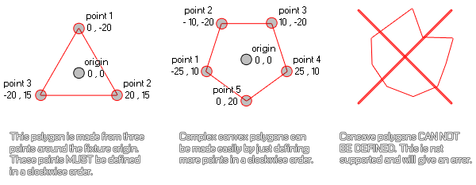

physics_fixture_add_point(fixture, xpos, ypos)
| 参数 | 描述 |
|---|---|
| fixture | 支架的索引 |
| xpos | 点的x坐标（相对于多边形支架原点） |
| ypos | 点的y坐标（相对于多边形支架原点） |
返回： 无
这个函数既能为先前使用physics_fixture_set_polygon_shape被创建的多边形中定义一个点也能为使用physics_fixture_set_chain_shape创建的链形中定义一个点。对于多边形支架，这个点是相对于支架的原点的，以x/y轴的0,0位置为中心，并且接下来的坐标都被像往常一样在GameMaker: Studio中以向右/向下作为+x、+y，向左/向上作为-x、-y。去计算。有一幅插图来帮助你可视化这个过程：

如你所见，任意一个简单的凸多边形都能以这种方式被塑造
，但是凹多边形在此刻是不被支持的。最后，为了封闭这个多边形，你必须将其绑定给一个实例你应该也要注意在将你的多边形绑定给一个实例之前你至少要为多边形定义3个点，否则你将会得到一个错误，而且如果你向一个先前没有被设定为多边形的支架中添加点也会引发错误。你也要注意一个支架允许的最大点数为8个。
对于链形（只是一系列连接起来的边缘形），这个函数将会设定一个点作为链接起边缘形的“连接处”。因此你需要在将支架绑定给实例之前至少定义两个点否则你将得到一个错误。然而，不像多边形那样，你不被限制最多8个点而你能够尽可能多的按你的要求添加点来创建链形，并且这些点被定义于实际的房间坐标，而不是实例的相对坐标。
physics_fixture_set_polygon_shape(fix_Ship);
physics_fixture_add_point(fix_Ship, 0,0);
physics_fixture_add_point(fix_Ship, -40, 100);
physics_fixture_add_point(fix_Ship, 40, 100);
上述代码将会将一个多边形应用给一个被索引为变量"fix_Ship"的支架并且接下来定义三个点来创建一个三角形。
| Converted from CHM to HTML with chm2web Pro 2.85 (unicode) |